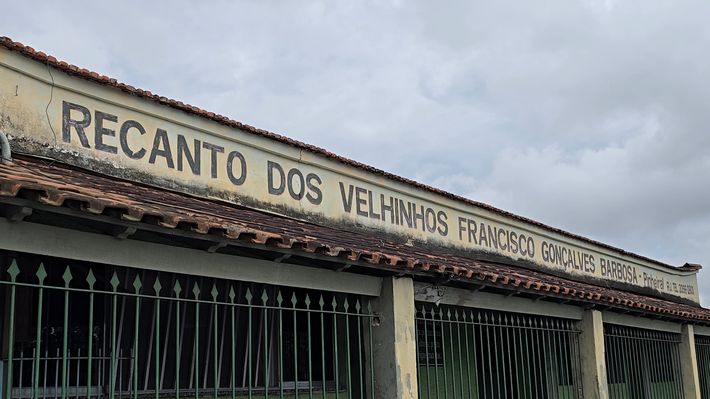

Promovemos qualidade de vida, bem-estar e atenção especializada para os idosos do Recanto dos Velhinhos Francisco Gonçalves Barbosa, em Pinheiral/RJ.
Sua contribuição ajuda a garantir mais conforto, cuidado e qualidade de vida para nossos residentes.
Divulgue o trabalho do Recanto e nos ajude a alcançar mais pessoas da comunidade.
Cada doação, seja em dinheiro ou em produtos, contribui diretamente para as necessidades dos nossos residentes.
Estas são as necessidades prioritárias atualizadas mais recentemente pela nossa equipe.
R. Francisco Ribeiro de Abreu, 60
Centro, Pinheiral - RJ, 27197-000
(24) 3016-4023
recantodosvelhinhos.pinheiral@gmail.com